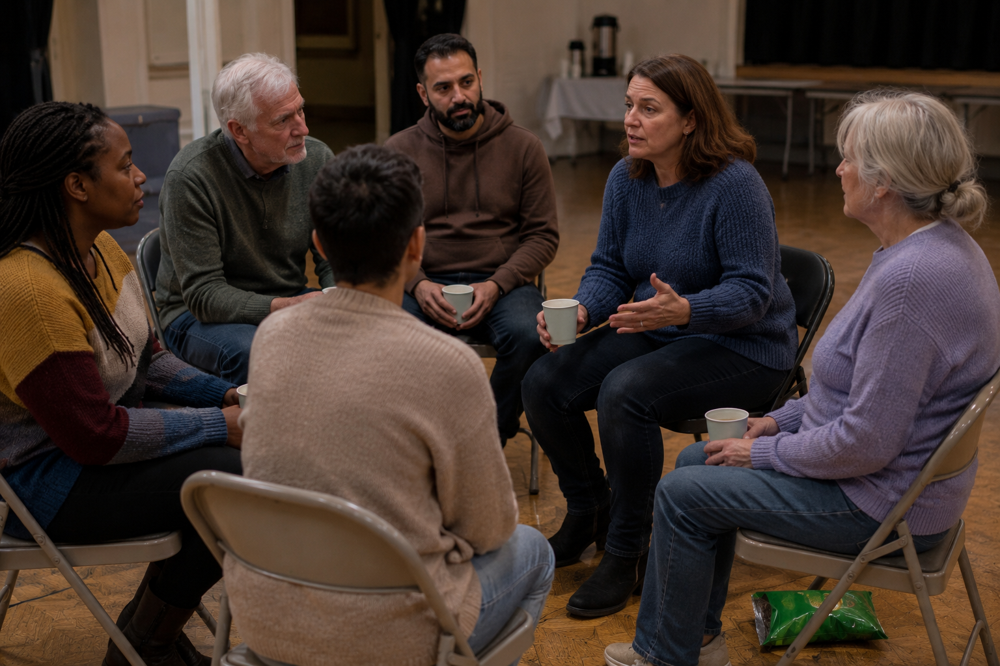
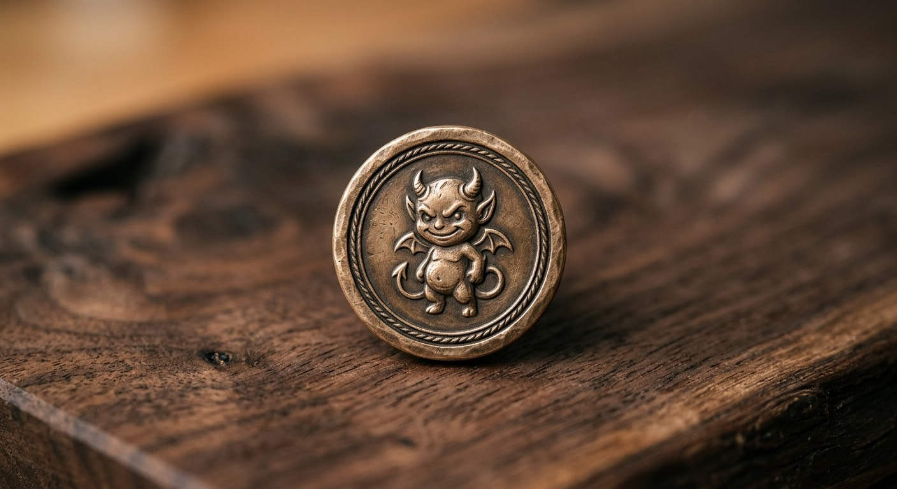
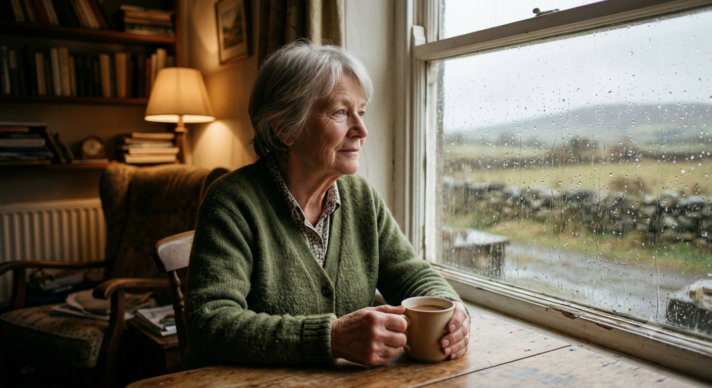
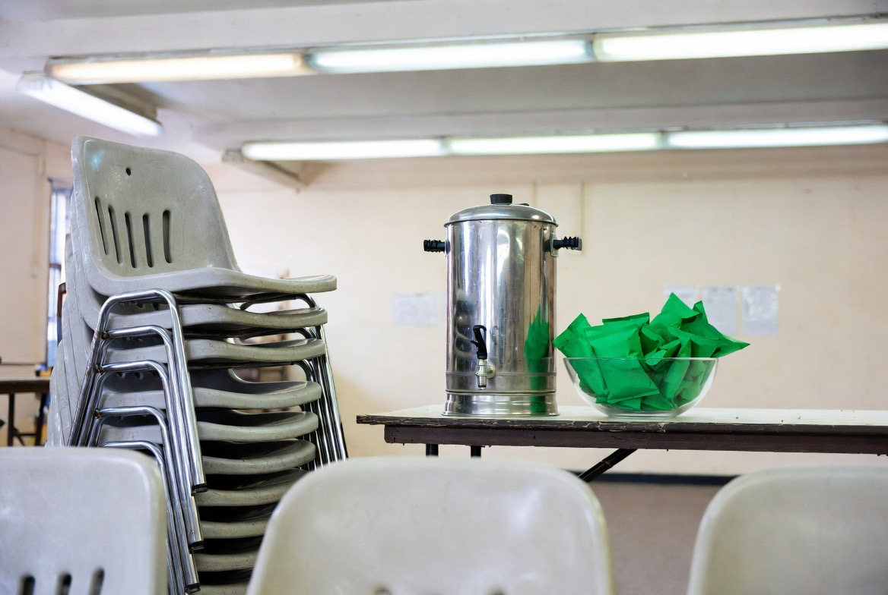

You are not alone

Somewhere tonight, a green packet sits on a shop shelf, unbought. Somewhere, a person stands at a press, certain they had a bag, finding only crumbs and regret. That person is you. That person is all of us.
Meanies Anonymous is a free, anonymous fellowship for anyone whose relationship with pickled-onion corn snacks has become unmanageable — whether you forget them, hoard them, or finish the family bag standing over the bin so nobody saw.
The Twelve Steps
- We admitted we were powerless over Meanies — that our presses had become empty.
- Came to believe a bigger bag could restore us to crunch.
- Made a decision to add them to the list, in writing, before leaving the house.
- Made a searching and fearless inventory of the snack drawer.
- Admitted to ourselves and to one other person the exact number of bags consumed in the car.
- Were entirely ready to share. (We were not ready to share.)
- Humbly accepted that they are, in fact, demon-shaped.
- Made a list of all persons whose Meanies we had eaten.
- Made direct amends, except where doing so would mean giving the bag back.
- Continued to take personal inventory, and when the bag was empty, promptly admitted it.
- Sought through reminders and lists to improve our memory at the shop.
- Having had a crunchy awakening, we carried this message to others, and bought them a bag too.
Your streak
Track the days since you last let yourself down at the till. Be honest. The counter knows.

Voices from the fellowship

"I told myself one bag. It is never one bag. It has never once been one bag."
— Bridie M.
"My family thinks I keep them for guests. We do not have guests. I have a system."
— Pat K.
"Day one, all over again. But I'm here. That has to count for something."
— Anonymous, after a big shop
Meetings

Drop in. No commitment, no judgement, bring your own bag (and one to share).
- Mondays
- After the big shop, by the bins
- Wednesdays
- Half-eight, the good press
- Fridays
- Whenever the craving hits